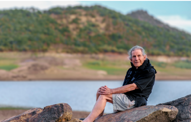

About Gary Zukav
A clear telling of deep wisdom.
The live page frames Gary through clarity, warmth, and authority. This version keeps that structure but lifts it into a more premium editorial portrait.
Voice and presence
Complex insight, translated into language people can actually live.
One of the strongest truths on the live page is that Gary makes complex spiritual insight understandable. That should stay front and center.
Here, the biography does not begin with awards. It begins with what a visitor feels when encountering Gary’s work: clarity, warmth, humor, and a sense that what once felt abstract can become lived experience.
The page still supports authority, but it earns that authority through narrative rhythm rather than a dense résumé dump.
Credibility
A life that bridges service, thought, and consciousness.
The live page carries a long credential paragraph. In our system, that content becomes a cleaner credibility layer that is easier to scan and trust.
Co-founder of SOTSI
Built the institute with Linda Francis as a dedicated home for authentic power and spiritual growth.
Service and recognition
Includes academic, military, and humanitarian recognition that reinforces the breadth of his path.
Public reach
Multiple Oprah appearances and books published in many languages position Gary as both trusted guide and global author.
Public trust
Recognition that supports, not overshadows, the message.
This image and credibility block can later connect to books, endorsements, and verified impact stats once all rights and figures are finalized.
His gentle presence, humor, and wisdom have inspired millions to realize their soul’s greatest potential.Core idea carried from the live Gary page
Author
Gary’s page should lead naturally into books and core teachings without reading like a sales page.
Teacher
The visual language should feel reverent and intelligent, not celebrity-driven or overly promotional.
Guide
Position Gary as a trusted translator of consciousness, not just a founder or public figure.
Continue from the man to the work.
The next natural move from Gary’s biography is to the institute itself, the books, or a direct getting-started flow.